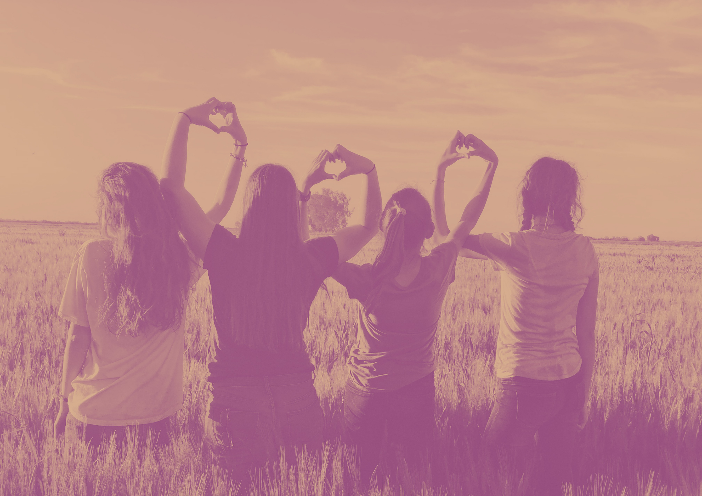

Vyrostla jsem v Praze a postupem času se ze mě stal kosmopolitní člověk. Žila jsem v Londýně, Belgii, Německu a v Číně. Mám vystudovaného Mgr. z mezinárodních vztahů a MSc. z managementu, ale nejlepší škola byla ta života. Baví mě výzvy a dobrodružství. Dřív jsem měla FOMO, ale díky meditaci si umím užít i maličkostí. Pořád jsem „neposeda“ a baví mě nová místa a zkoušet nové věci. Přes den pracuji jako markeťák a obchodák, ale jsme malá rodinná firma, takže většinou “přezuji” a dělám vše co je potřeba. Prostě typický workoholik a perfekcionista. Když zrovna nepracuji, mám ráda vodní sporty, yogu, improvizaci a jsem součásti anglického řečnického klubu Prague Business Toastmasters. Často cestuji sama a na vlastní pěst a chtěla bych udělat cestovního průvodce pro ženy. Pokud tě tento projekt zajímá, dej vědět!